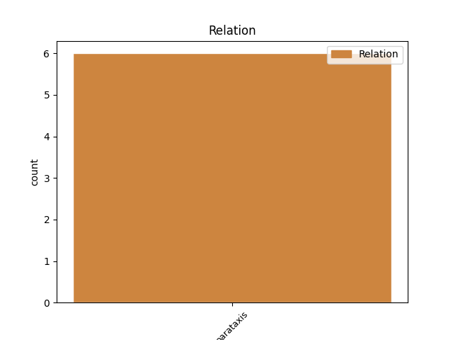
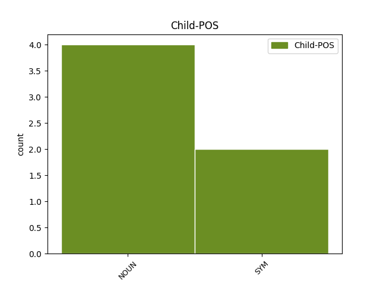

Distribution of features within this leaf


Agreement Rules sorted by frequency.
- When the dependent token is the parataxis(parataxis) of the head token, and the head token is NOUN and the dependent token is NOUN.
1 Падобныя _ _ _ _ 0 _ _ _
2 дакументы _ _ _ _ 0 _ _ _
3 існуюць _ _ _ _ 0 _ _ _
4 у _ _ _ _ 0 _ _ _
5 многіх _ _ _ _ 0 _ _ _
6 краінах _ _ _ _ 0 _ _ _
7 , _ _ _ _ 0 _ _ _
8 яны _ _ _ _ 0 _ _ _
9 рэгламентуюць _ _ _ _ 0 _ _ _
10 атрыманне _ _ _ _ 0 _ _ _
11 экалагічна _ _ _ _ 0 _ _ _
12 чыстай _ _ _ _ 0 _ _ _
13 прадукцыі прадукцыя NOUN _ Animacy=Inan|Case=Gen|Gender=Fem|Number=Sing 0 _ _ _
14 , _ _ _ _ 0 _ _ _
15 у _ _ _ _ 0 _ _ _
16 першую _ _ _ _ 0 _ _ _
17 чаргу _ _ _ _ 0 _ _ _
18 дзіцячага _ _ _ _ 0 _ _ _
19 і _ _ _ _ 0 _ _ _
20 здаровага _ _ _ _ 0 _ _ _
21 харчавання харчаванне NOUN _ Animacy=Inan|Case=Gen|Gender=Neut|Number=Sing 13 parataxis _ SpaceAfter=No
22 , _ _ _ _ 0 _ _ _
23 напрыклад _ _ _ _ 0 _ _ _
24 бульбы _ _ _ _ 0 _ _ _
25 , _ _ _ _ 0 _ _ _
26 без _ _ _ _ 0 _ _ _
27 ужывання _ _ _ _ 0 _ _ _
28 мінеральных _ _ _ _ 0 _ _ _
29 угнаенняў _ _ _ _ 0 _ _ _
30 і _ _ _ _ 0 _ _ _
31 хімічных _ _ _ _ 0 _ _ _
32 сродкаў _ _ _ _ 0 _ _ _
33 абароны _ _ _ _ 0 _ _ _
34 . _ _ _ _ 0 _ _ _
1 Не _ _ _ _ 0 _ _ _
2 надта _ _ _ _ 0 _ _ _
3 глыбока _ _ _ _ 0 _ _ _
4 , _ _ _ _ 0 _ _ _
5 дно _ _ _ _ 0 _ _ _
6 і _ _ _ _ 0 _ _ _
7 берагі _ _ _ _ 0 _ _ _
8 густа _ _ _ _ 0 _ _ _
9 ўкрытыя ўкрыты ADJ NNP Animacy=Inan|Case=Nom|Degree=Pos|Number=Plur 0 _ _ _
10 асакой _ _ _ _ 0 _ _ _
11 , _ _ _ _ 0 _ _ _
12 рагозам _ _ _ _ 0 _ _ _
13 , _ _ _ _ 0 _ _ _
14 стрэлкалістам _ _ _ _ 0 _ _ _
15 і _ _ _ _ 0 _ _ _
16 чаротам _ _ _ _ 0 _ _ _
17 і _ _ _ _ 0 _ _ _
18 дуплістымі _ _ _ _ 0 _ _ _
19 карчамі _ _ _ _ 0 _ _ _
20 — _ _ _ _ 0 _ _ _
21 важная _ _ _ _ 0 _ _ _
22 ўмова ўмова NOUN NN Animacy=Inan|Case=Nom|Gender=Fem|Number=Sing 9 parataxis _ _
23 для _ _ _ _ 0 _ _ _
24 андатры _ _ _ _ 0 _ _ _
25 . _ _ _ _ 0 _ _ _
Disagree Examples:
1 Тэмпературныя _ _ _ _ 0 _ _ _
2 рэкорды рэкорд NOUN NN Animacy=Inan|Case=Nom|Gender=Masc|Number=Plur 0 _ _ _
3 красавіка _ _ _ _ 0 _ _ _
4 ( _ _ _ _ 0 _ _ _
5 30,7 _ _ _ _ 0 _ _ _
6 °С °с SYM SYM Animacy=Anim|Case=Gen|Gender=Masc|Number=Sing 2 parataxis _ _
7 і _ _ _ _ 0 _ _ _
8 - _ _ _ _ 0 _ _ _
9 20,8 _ _ _ _ 0 _ _ _
10 °С _ _ _ _ 0 _ _ _
11 ) _ _ _ _ 0 _ _ _
12 былі _ _ _ _ 0 _ _ _
13 зафіксаваныя _ _ _ _ 0 _ _ _
14 22 _ _ _ _ 0 _ _ _
15 красавіка _ _ _ _ 0 _ _ _
16 1950 _ _ _ _ 0 _ _ _
17 у _ _ _ _ 0 _ _ _
18 Брэсце _ _ _ _ 0 _ _ _
19 і _ _ _ _ 0 _ _ _
20 5 _ _ _ _ 0 _ _ _
21 красавіка _ _ _ _ 0 _ _ _
22 1956 _ _ _ _ 0 _ _ _
23 года _ _ _ _ 0 _ _ _
24 ў _ _ _ _ 0 _ _ _
25 Езярышчы _ _ _ _ 0 _ _ _
26 ( _ _ _ _ 0 _ _ _
27 Віцебская _ _ _ _ 0 _ _ _
28 вобласць _ _ _ _ 0 _ _ _
29 ) _ _ _ _ 0 _ _ _
30 . _ _ _ _ 0 _ _ _
1 Самым _ _ _ _ 0 _ _ _
2 цёплым _ _ _ _ 0 _ _ _
3 красавіцкім _ _ _ _ 0 _ _ _
4 днём _ _ _ _ 0 _ _ _
5 у _ _ _ _ 0 _ _ _
6 Мінску _ _ _ _ 0 _ _ _
7 было _ _ _ _ 0 _ _ _
8 22 _ _ _ _ 0 _ _ _
9 красавіка _ _ _ _ 0 _ _ _
10 1950 _ _ _ _ 0 _ _ _
11 г. _ _ _ _ 0 _ _ _
12 ( _ _ _ _ 0 _ _ _
13 26 _ _ _ _ 0 _ _ _
14 °С _ _ _ _ 0 _ _ _
15 ) _ _ _ _ 0 _ _ _
16 , _ _ _ _ 0 _ _ _
17 а _ _ _ _ 0 _ _ _
18 самым _ _ _ _ 0 _ _ _
19 халодным халодны ADJ JJL Case=Ins|Degree=Pos|Gender=Masc|Number=Sing 0 _ _ _
20 -- _ _ _ _ 0 _ _ _
21 1 _ _ _ _ 0 _ _ _
22 красавіка _ _ _ _ 0 _ _ _
23 1923 _ _ _ _ 0 _ _ _
24 г. _ _ _ _ 0 _ _ _
25 ( _ _ _ _ 0 _ _ _
26 - _ _ _ _ 0 _ _ _
27 18,4 _ _ _ _ 0 _ _ _
28 °С °с SYM SYM Animacy=Anim|Case=Gen|Gender=Masc|Number=Sing 19 parataxis _ SpaceAfter=No
29 ) _ _ _ _ 0 _ _ _
30 . _ _ _ _ 0 _ _ _
1 Аднак _ _ _ _ 0 _ _ _
2 , _ _ _ _ 0 _ _ _
3 жыхарка _ _ _ _ 0 _ _ _
4 Гродна _ _ _ _ 0 _ _ _
5 прадала _ _ _ _ 0 _ _ _
6 кватэру _ _ _ _ 0 _ _ _
7 , _ _ _ _ 0 _ _ _
8 каб _ _ _ _ 0 _ _ _
9 не _ _ _ _ 0 _ _ _
10 пазбавіцца _ _ _ _ 0 _ _ _
11 ўкладзеных _ _ _ _ 0 _ _ _
12 раней _ _ _ _ 0 _ _ _
13 сродкаў _ _ _ _ 0 _ _ _
14 і _ _ _ _ 0 _ _ _
15 ўнесці _ _ _ _ 0 _ _ _
16 ў _ _ _ _ 0 _ _ _
17 набыццё _ _ _ _ 0 _ _ _
18 акцый _ _ _ _ 0 _ _ _
19 структуры _ _ _ _ 0 _ _ _
20 абумоўленую _ _ _ _ 0 _ _ _
21 суму сума NOUN NN Animacy=Inan|Case=Acc|Gender=Fem|Number=Sing 0 _ _ _
22 ( _ _ _ _ 0 _ _ _
23 некалькі _ _ _ _ 0 _ _ _
24 дзясяткаў дзясятак NOUN NN Animacy=Inan|Case=Gen|Gender=Masc|Number=Plur 21 parataxis _ _
25 тысяч _ _ _ _ 0 _ _ _
26 даляраў _ _ _ _ 0 _ _ _
27 ) _ _ _ _ 0 _ _ _
28 . _ _ _ _ 0 _ _ _
1 — _ _ _ _ 0 _ _ _
2 Рэкардсмен _ _ _ _ 0 _ _ _
3 — _ _ _ _ 0 _ _ _
4 Талачынскі _ _ _ _ 0 _ _ _
5 раён _ _ _ _ 0 _ _ _
6 , _ _ _ _ 0 _ _ _
7 дзе _ _ _ _ 0 _ _ _
8 збіраюць _ _ _ _ 0 _ _ _
9 41 _ _ _ _ 0 _ _ _
10 - _ _ _ _ 0 _ _ _
11 42 _ _ _ _ 0 _ _ _
12 тоны тона NOUN _ Animacy=Inan|Case=Gen|Gender=Fem|Number=Sing 0 _ _ _
13 бульбы _ _ _ _ 0 _ _ _
14 з _ _ _ _ 0 _ _ _
15 гектара _ _ _ _ 0 _ _ _
16 , _ _ _ _ 0 _ _ _
17 гэта _ _ _ _ 0 _ _ _
18 высокі _ _ _ _ 0 _ _ _
19 нават _ _ _ _ 0 _ _ _
20 па _ _ _ _ 0 _ _ _
21 сусветных _ _ _ _ 0 _ _ _
22 мерках _ _ _ _ 0 _ _ _
23 паказчык паказчык NOUN _ Animacy=Inan|Case=Nom|Gender=Masc|Number=Sing 12 parataxis _ SpaceAfter=No
24 » _ _ _ _ 0 _ _ _
25 . _ _ _ _ 0 _ _ _